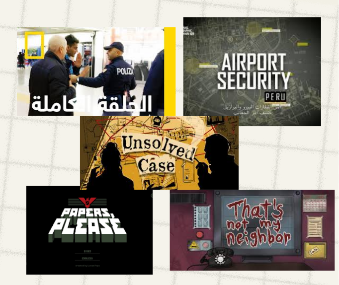

Overview
Airport Security is a 2D puzzle game made for a Godot game jam themed "2D puzzle" , it WON 1st place. Team was of 3: Me, Leen, and Zaid, built in a day and a half. You play a new intern in airport security, and an officer tests you by finding the smuggler among 3 characters by checking bags, ID, passport, and talking to suspects.
Play the gameConcept and Decisions
Leen suggested the concept from National Geographic's "Airport Security" show, I suggested the gameplay style from "That's Not My Neighbor." We only had half a day to plan, so we agreed fast: I'd take full game logic, Leen took art and polish, Zaid the main menu. We also agreed to build the whole logic first with placeholder art using (blocking-out technique), and to reuse a dialogue/settings system I'd already built in an earlier game to save time.

My Role and Responsibilities
Full game logic: UI interactables, the dialogue system, the smuggler-voting mechanic, and the intro/win/lose scenes — including writing all the dialogue.
Process & Breakdown
I started with the UI panel and interactable pieces using temp images. I reused my dialogue system for the "Talk to suspect" option and wrote each character's lines.
Then I built the voting scene using Godot's group system for radio buttons.
I also payed attention for difficulty design. The officer briefs the player on clues to watch for; distractors like a dog reacting to food on an innocent character, or a suspiciously talkative character.
Challenges and Problems Solved
- Tons of Git merge conflicts on .tscn scene files (I was still learning branches). Some fixes even corrupted scenes, I fixed them with AI's help.
- Bag-search was meant to use dragging to reveal items, but ran out of time so we swapped the idea to just have a visible zip bag on one character`s bag instead.
- Some buttons broke under time pressure, so instead of one shared button script, I ended up writing a separate script per button just to make it work in time.

My Impact
I didn't like the idea of the game just starting on gameplay and ending on a plain win/lose screen, so I suggested adding officer dialogue scenes at the start and end. That's actually where the whole "new intern being tested by the officer" framing came from , it wasn't planned from the start, it grew out of that decision.

How I Used AI
Used AI to fix corrupted .tscn files after bad merge resolutions as well as teaching me Godot editor guide (I was still new to Godot back then).
Lessons Learned
- Thinking fast under pressure.
- Deeper understanding of Git conflicts and reading .tscn files.
- Reusing and adapting prior systems instead of rebuilding.
- Blocking-out development.
- Designing puzzles from the player's perspective.
- Building UI interactable components and radio buttons.
- Weaving narrative into a puzzle game.
- Stronger 2D skills.